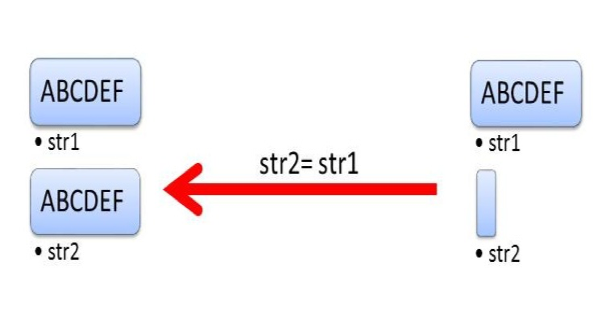

C++
C++ Language reference
Types
Type Information
Ways to obtain the type of something.
To retrieve the type of a variable we can use the typeid operator, from the <typeinfo> header. This returns a type_info object.
Circle c(5.0);
const std::type_info& t = typeid(Circle);
const std::type_info& v = typeid(c);
Each type has a single type_info instance associated with it. The returned object is also a reference. type_info objects can be compared. We can also get the name of the type id with name().
if (typeid(a) == typeid(b)) {
//a and b are the same type
}
std::cout << typeid(a).name() << std::endl;
Literals
Literals are explicit values
Literals can be a value of any basic data type. Literal values are fixed and referred to as constants. They are not limited to simple values however, and can be lambda functions called function literals.
Raw String literals
Raw string literals are literal strings that are not interpreted (escape characters are not processed etc.).
R"(Text)";
Raw strings can place separators either side of ( or ), these are a maximum of 16 characters long without whitespace, backslashes, or colons.
R"Sep(Text)Sep";
Raw strings are important in expressing paths or regular expressions as they are not interpreted.
R"(C:\temp.txt)"; //path
R"(c\+\+)"; //regular expression
User Defined Literals
With C++11 we can define our own literals by adding a suffix to built-in literals for integers, floats, characters, or c strings. Their syntax is as follows:
<built-in literal> + _ + <suffix>
In general we use a unit as the suffix:
| Line | Built-in literal | Suffix |
|---|---|---|
1010_b |
1010 |
b |
123.45_km |
123.45 |
km |
'1'_character |
'1' |
character |
The C++ runtime maps literals to literal operators:
1_m=operator"" _m(1)"hello"_i18n=operator"" _i18n("hello", 5)
For example 0101_b is mapped to the operator operator"" _n(long long int bin) , the rules this follows are:
- The variable
binmust be of the typelong long int - There must be a space between
""and_.
In the case where the compiler can not find the corresponding literal operator compilation fails. With the introduction of C++14 the space is not required and allows us to define literals with reserved keywords such as _C. In C++14 the simple rule is that we can use suffixes that start with a cpatial letter.
User defined literals are important as they allow us to perform type safe arithmetic, ensuring we cannot add apples to pears.
Built-in Literals
There are some built-in literals for binary numbers, c-strings etc.
| Type | Suffix | Example |
|---|---|---|
| Binary Number | 0b | 0b1010 |
std::string |
s | “Hello”s |
complex<double> |
i | 5i |
complex<long double> |
il | 5il |
complex<float> |
if | 5if |
std::chrono::hours |
h | 5h |
std::chrono::minutes |
min | 5min |
std::chrono::seconds |
s | 5s |
std::chrono::milliseconds |
ms | 5ms |
std::chrono::microseconds |
us | 5us |
std::chrono::nanoseconds |
ns | 5ns |
Built-in literals do not use an underscore and in C++14 for the fist time we are able to us string literals, meaning we can initialize a string without using a c-string.
Raw and Cooked
The literal operator comes in the raw type, or cooked type.
Raw
Raw literal operators accept arguments as either (const char*, size_t), (const char*), or (const char).
1.45_km => operator"" _km("1.45");
Raw strings fall under this category.
Cooked
Cooked literal operators accept arguments as either (long double) or (unsigned long long int).
1.45_km => operator"" _km(1.45);
It is important to add an “_” in front of the suffix to distinguish user defined literals from built-ins
Raw form can be used for number types or string types, whereas cooked can only be used for number types.
Enumeration
Defining custom data types containing constant integer values
These constant integer values are known as enumerators.
enum Classic { //unscoped enumeration
red,
green,
blue = 3
};
std::cout << red << std::endl //0
std::cout << green << std::endl //1
std::cout << blue << std::endl //3
Statically Typed Enumerations (Scoped Enumerations)
With the introduction of C++11 enumerations can only be accessed within the scope of the enum (i.e. we have to access enumerators from the namespace of the enum) and are not imported to the enclosing scope. By default the type of an enum is an int in C++11 and later, which allows us to forward declare them. These enums are called statically-typed.
enum struct Statically {
red,
green,
blue = 3
};
- We must use the
staticorclasskeyword to define a statically typedenum - We must use a
static castto access a statically-typedenumas anint
std::cout << static_cast<int>(Statically::red) << std::endl //0
std::cout << static_cast<int>(Statically::green) << std::endl //1
std::cout << static_cast<int>(Statically::blue) << std::endl //3
These enums do not have to be of the int type however. We can use all integral types such as bool, char, and long long int.
The type of the enumerators is implicit based on the value of the number (0-255 would be a char for example). In addition as scoped enums are not implicitly converted to int the following is valid:
void enumType(Satically e) {
switch(e) {
case Statically::red:
std::cout << "Statically::red" << std::endl;
break;
case Statically::green:
std::cout << "Statically::green" << std::endl;
break;
default:
std::cout << "Statically::blue" << std::endl;
}
}
Pointers
A pointer holds the memory address of a value
A pointer can be created using the * operator, and the address of a value can be accessed by the & operand.
int i = 10;
int* iptr = &i;
std::cout << i << "is at address: " << iptr << std::endl;
Accessing the value of pointed to by a pointer is called dereferencing.
std::cout << "i = " << *iptr << std::endl; //dereferencing
Pointers store data in heap memory, hence we can modify them regardless of scope.
Pointer Arithmetic
Pointer arithmetic allows us to change the address we use to access a value, and is the same process as indexing.
intArray[i];
*(intArray + i); //equivelant
Adding a value to a pointer moves the address pointed to by the pointer, and then dereferencing this pointer retrieves this new value. This is how the compiler treats [] .
Dynamic memory
Creating new data in memory is done with the
newkeyword
int* intArray = new int[10];
Null Pointers
Before C++11,
0was often used to represent an empty or null value when theNULLmacro was not applicable. The issue with the literal0is that it can be the null pointer(void*)0or the number0. This is defined by the context.
Often we may accidentally apply pointer arithmetic to a value we thought was just an integer. An alternative to this is to use the NULL macro, which helps readability, but functionally is equivalent.
The new standard is to use nullptr, which is a type by itself std::nullptr_t, and does not evaluate to 0.
- You cannot dereference a
nullptr - Any pointer can be assigned
nullptr - A
nullptrcan be compared and converted to all types of pointer
We cannot compare or convert a nullptr to an integral type, except for bools, allowing us to use nullptr in logical expressions.
Function Pointers
Creating a pointer to a function follows the following syntax:
<return type> (*<pointer name>)(<arg 1>, ...<arg n>) = <function name>
Calling the function from the pointer is as you would expect:
fptr(a);
Member Pointers
We can make pointers to class or struct members as well
struct X{
int data;
};
int X:: * p = &X::data; //pointer to member
X object;
object.data = 2011; //set instance memeber
X* objptr = new object;
objptr->data = 2014; //set instance member
std::cout << object.*p << std::endl; //dereferencing
std::cout << objptr->*p << std::endl; //dereferencing
References
A reference is an alias for an existing variable, created with the
&operator
Once created a reference can be used instead of the original variable, changes made to either one are reflected in the other.
int i = 30;
int& iref = i;
std::cout << i << std::endl; //30
std::cout << iref << std::endl; //30
References vs Pointers
- References can never be
NULL, it must always be initialized with an existing variable. - References can not be assigned to another variable, acting like a
constantpointer.
References as Parameters
References allow functions to modify the value of a variable
References are not copied, they are not passed by value.
This functionality is also very useful when dealing with a large argument. Passing it by value would mean that a copy has to be made in the function. This is memory-intensive.
Type Deduction
The
autokeyword can be used to let the compiler decide the data type itself
auto determines a type from an initializer, all variables therefore need an initializer. By using auto the compiler ensures that all types is initialized.
- Non-constant members of a class should not be initialized with an
autotype - Using
autoallows us to easily refactor our code, as we can change the value of variables frominttodoublewithout changing the types of expressions and other variables. - To force an
autodeduction to become a pointer useauto*, andauto&for references.
auto i = 5; //int
auto* iptr = &i; //int*
auto& iref = i; //int&
int func(){return 2011;}
auto fptr = func; //int (* < fptr >)()
decltype
decltypereturns the type of an expression or entity, i.e.decltype(expression)
- If the expression is an
lvaluea reference to the data type is returned - If the expression is an
rvaluethe data type is returned
int i = 2011;
decltype(i) i2 = i; //int i2 = i; (rvalue)
decltype((i)) iref = i2; //int& iref = i2; (lvalue)
Automatic Return Types
To deduce the return type of a function automatically we need to do two things, delay the declaration of the functions return type, and include a trailing return type.
- Declaring a functions return type as
autoin it’s signature delays the return type declaration - Using the
decltype()keyword in the trailing return type will let the automatic type deduction recognise the correct data type. - We must use the trailing return type syntax as our method signature:
template <typename T1, typename T2>
auto add(T1 a, T2 b) -> decltype(a + b) { //before "->" = signature, after "->" = trailing type
return a + b;
}
With the introduction of C++14 auto does not require a trailing type
template <typename T1, typename T2>
auto add(T1 a, T2 b) {
return a + b;
}
Casting
There are four different types of cast operators:
dynamic_caststatic_castconst_castreinterperet_cast
Explicit casting requires the type we want to cast our data to.
int i = static_cast<int>(5.5);
We can also use the C syntax, known as a c-cast:
int i = (int) 5.5;
It is not encouraged to use c-casts as we do not know which type of cast occurs, and usually follows multiple casts.
dynamic_cast
dynamic_castonly deals with references or pointers
A dynamic cast converts a pointer or reference of a class to a pointer or reference in the same inheritance hierarchy. It can only be used with polymorphic classes, allowing us to cast up, down, and across. This cast’s validity is determined at runtime, and if it is not possible we will receive a nullptr or std::bad_cast-exception for a reference.
class Account{
public:
virtual ~Account() = default;
};
class BankAccount: virtual public Account{};
Account* a = nullptr;
BankAccount* b = nullptr;
BankAccount c;
a = dynamic_cast<Account*>(&c); //upcast
b = dynamic_cast<BankAccount*>(a) //downcast
static_cast
Static casts only perform conversions well-defined by the compiler, e.g. not a string to integer. It allows bidirectional conversion between related data types and cannot be used with polymorphic types. The static_cast is performed at compile time.
class Account{};
class BankAccount: public Account{};
enum Color{
red,
blue,
green
};
Account * a = nullptr;
BankAccount * b = nullptr;
a = static_cast<Account*>(b); //upcast
b = static_cast<BankAccount*>(a); //downcast
int i{2};
Color col = static_cast<Color>(i); //green
const_cast
const_castallows us to add or remove theconstorvolatileproperty from a variable
const_cast is rarely used because removing const or volatile from a variable declared as such in the first place is undefined behaviour.
int i{2011};
const int* constI = const_cast<const int*>(&i);//make constant pointer
int* nonConstI = const_cast<int*>(constI);//remove constant pointer
reinterpret_cast
reinterpret_castallows us to convert a pointer of a particular type to another type, whether or not the types are related.
A reinterpret_cast also allows the conversion between an integral and pointer. The cast guarantees that is a pointer is canst into another type casting it back would return the original value. Using this cast is not recommended as it does not take any safety measures.
double * aDouble = 3.14;
void * aVoid = reinterpret_cast<void*>(aDouble);
double * doubleAgain = reinterpret_cast<double*>(aVoid); //3.14
Unified Initialization
In
C++11initialization became uniform, uniform initialization uses{}.
Uniform initialization is always applicable by the C++ standard. Variables can be initialized in this way with or without assignment:
int i{2011};
std::string j = {"my string"};
When using assignment the value is first created, and then implicitly converted to the correct type. Without initialization the type’s constructor is directly called.
When using unified initialization we cannot overflow the size of a type.
char a = 999; //999 does not fit into a char type. We loose the extra data.
char b{999}; //Error compiler will not allow overflow. No data loss.
Calling the Constructor
When using a {} initialiser we call the types constructor with (std::initializer_list<T>) as arguments. Hence to work we can define a constructor in a class as such:
class MyData {
public:
MyData(std::initializer_list<int> data) {
for (auto i : data) std::cout << i << std::endl;
}
}
{...}is of the typestd::initializer_list<T>and thereforeauto i {42}is of the typestd::initializer_list<int>. Specify a type to call a specific constructor.- As of
C++17{}initialization without assignment resolves to the type of the element inside the provided list, there can only be one element.
//C++ 14
auto a {42}; //std::initializer_list<int>
auto b {42, 43}; //std::initializer_list<int>
auto c = {42}; //std::initializer_list<int>
auto d = {42, 43}; //std::initializer_list<int>
//C++ 17
auto a {42}; //int
auto b {42, 43}; //Error: too many values
auto c = {42}; //std::initializer_list<int>
auto d = {42, 43}; //std::initializer_list<int>
Variable Modifiers
Modifiers change the properties of a variable
Const
Any variable marked with
constcan not be modified later on.
- Class methods can also be marked as
const, and onlyconstinstances can call them. - In a
constpointer both the data and pointer can beconst. Read these from right to left.
int i = 10; //normal variable
int const* ip = &i; //constant pointer, ip is a pointer to a const int. ip is not constant.
*ip = 11; //error
ip = ip + 1; //error: non-const pointer
int* const ip1 = &i; // ip1 is a constant pointer to an int.
*ip1 = 11; //error: pointer being non-constant
ip1 = ip1 + 1; //error
int const* const ip2 = &i; //ip2 is a constant pointer to a constant int.
//We can modify i, but not through ip2.
*ip2 = 11; //error
ip2 = ip2 + 1; //error
Constexpr
Defines an expression evaluated at compile time
Can be used for functions, variables, and user-defined types. A constant expression variable can be used anywhere that requires a truly constant value, like an array size.
constexpr double a = 3.14;
A constexpr value is automatically const, has to be initialized, and this initialization must also be a constant expression.
“The rules make sense. If we evaluate a variable at compile-time, the variable can only depend on values that can be evaluated at compile time.”
Constant Expression User Defined Types
When using a constant expression with a user defined type there are some restrictions:
- A
constexptconstructor can only:- be invoked by a constant expression
- cannot use exceptions
- has to be declared as
defaultordelete, or the body must be empty
- Each base object and non-static member must be initialized in the constructors initializer list (see later) or directly.
- The constructor body must be empty.
- Methods within the class do not have to be constant expressions.
Constant Expression Functions
Constant expression functions can be run at compile time, and the results instantly available at runtime.
These functions are implicitly inline. Their restrictions:
- Non-virtual
- Arguments and return values are
literal types. So are function variables. - Only one return statement
- Must return a value
- Executed at runtime when invoked by a constant expression.
- Can only have a body consisting of a return statement.
- Must have a constant return value.
constexpr int gcd(int a, int b) {
return (b == 0) ? a : gcd(b, a % b)
}
As of C++14 there were changes made, when using C++14 we only have to remember we cannot use static or thread_local data.
constexpr auto gcd(int a, int b){
while (b != 0){
auto t= b;
b= a % b;
a= t;
}
return a;
}
**constant expression functions do not rely on the state of the program, even if executed at run time. This means they are always pure functions (always return the same value). **
Volatile
The volatile variable is one who’s value may change due to an external event.
We usually only change the value of a variable within our code, and an external I/O call which tries to do so would not be allowed for example.
This would be possible if the variable was marked volatile.
volatile int i{2011};
Compared to the same modifier in Java or C# there is no multithreading semantics involve with volatile in C++.
volatile is usually used in embedded programming to denote an object that can change independently of the regular program flow.
Hence we can modify and read variables in separate threads marked volatile. If we do this we can not guarantee the values of these variable in either thread.
Rvalues and Lvalues
Rvalues are temporary objects without a name. We can no get an address from them, and are always on the right hand sie of assignment.
All others are Lvalues, these can only be on the left hand side.
int lvalue = 2011 // 2011 is an rvalue
References
Lvalue references have a single & , whilst rvalue references have two &&.
Lvalues can only be bound to Lvalue references, whilst rvalues can als be bound to constant lvalue references as well as rvlaue references.
MyData a;
MyData& lvalRef(a); //lvalue ref
MyData&& rvalRef(MyData()); //rvalue ref
const MyData& rvalRef2(MyData()); //rvalue ref
Rvalues are very efficient when moving objects, as we dont have to copy them. They also require no memory allocation or de-allocation.
Move and Copy
Move and copy are operations we can perform on memory.
Copying duplicates the elements of ne object into another and is considered expensive. If we do not have enough memory we could get a std::bad_alloc exception.
Moving takes the elements from one element and puts them in another, it is however not guaranteed to leave the source object empty. This means we have valid but unspecified behavior.
| copy | move |
|---|---|
|  |
- An object supports copying if it has a copy constructor and operator, and supports moving if it has a moving constructor and operator.
- Copy operations use constant
lvaluereferences, whilst move usesrvaluereferences.
Remember the point of a move operation is to set the new values and erase the old ones, while copy is just to set the new ones.
class MyData{
public:
//move constructor
MyData(MyData&& m): i(std::move(m.i)), j(std::move(m.j)) {
m.i = 0;
m.j = ""s;
};
//move operator
MyData& operator = (MyData&& m) {
i = std::move(m.i);
j = std::move(m.j);
m.i = 0;
m.j = ""s;
}
//copy constructor
MyData(const MyData& m): i(m.i), j(m.j) {};
//copy operator
MyData& operator = (const myData& m) {
i = m.i;
j = m.j;
}
private:
int i;
std::string j;
};
Move
Requires the
<utility>header
std::move converts its argument to an rvalue by a static_cast, if we try to move a non-moveable object the compiler will fall back to a copy operation.
Moving is very fast.
Forwarding
The act of a function forwarding its arguments without changing their properties (
lvalueorrvalue), known as perfect forwarding
Such methods are known as perfect factory methods. They:
- accept any number of lvalues and rvalues as arguments.
- forwards its arguments the same way as the underlying constructor.
In essence a perfect factory method is a way of constructing a type which maintains whether the value is an rvalue or lvalue
//the perfect factory method will be called create
template <typename T, typename Arg>
T create(Arg&& a) {
return T(std::forward<Arg>(a));
}
- Above we take a
universal referenceasArg&&, this is a special reference that can take both r and l values. - note the
returnstatement can be replaced with any function call as needed for the function, the idea is that we can do something whilst moving and rvalue or copying an lvalue automatically by usingstd::forward.
//variadic function to work with any number of arguments
template <typename T, typename ... Args>
T create(Args&& ... args) {
return T(std::forward<Args>(args)...);
}
Above we can call create with 0 to n number of arguments.
Functions
There are two style of syntax to write functions in c++, the newer of which is compulsory when using the auto keyword as a return type.
Old:
<return type> <name>(<params>) { <body> }
C++11 and above:
auto <name>(<params>) -> <return type> { <body> }
Default Arguments
Values to be used for parameters when none are specified
int func(int x, int y = 0, bool t = false) {
return x + y;
}
- Default arguments use an
=inside the parameter list - The arguments must com after all non default arguments
Overloading
Changing function behaviour by changing the signature of a method of the same name as another
We can provide alternate behaviour for functions using overloads, where two functions have the same name but different signature. Note that overloading disregards references int x is treated the same as int& x when determining the signature of the method.
Lambda Functions
Functions without a name
Lambdas can be treated as data values, allowing them to be assigned to variables etc.
[<used variables>] (<params>) -> { <function body> }
- Lambda’s have a constant function body unless they are specified by the
mutablekeyword[...] (...) mutable -> {...} - The
->is optional
Lambdas are called function operators, classes that have their call operator (operator ()) overloaded. A function object can then have a state.
- All variables in the
[...]are initialized in the function objects constructor. Known as binding.
Closures
The act of binding variables accessible from the current scope (discussed above) to the function is called closure. Below are some types of closure.
| Binding | Description |
|---|---|
[] |
No Binding |
a |
Copy a |
&a |
Take a reference of a |
[=] |
All used variables accessible in this scope should be taken as a copy |
[&] |
All used variables accessible in this scope should be taken as a reference |
[=,&a] |
Take all used variables by copy, and a by reference |
[&,a] |
Take all used variables by reference, and a by copy |
[this] |
Copy the data and members of the enclosing scope (the current object etc.) |
[l = std::move(lock)] |
L becomes lock by moving (see Move and Copy) |
As variable bindings are initialized in a constructor there value will remain whatever it was when defining the function unless it is a reference.
auto copy = "original"s;
auto refer = "original"s;
auto lambda = [copy, &refer] () -> {std::cout << copy << ", " << refer << std::endl};
lambda(); //original, original
copy = "new";
refer = "new";
lambda(); //original, new
Generic Lambda’s
As of
c++14Lambda functions can take generics just as normal functions
[](auto a, auto b) -> { return a + b; }
- Both
aandbare automatically deducted, as well as the return type. We could add any two compatible types wiht the above function.
**Remember generics allow us to pass any type of data to a function or class enabling us to provide functionality for many types from one function or class body. **
Memory Allocation
Heap memory, or dynamic memory, must be explicitly requested and released in C++
new and new[] can be used to allocate memory, whilst delete and
delete[] can be used to deallocate memory. The compiler will
automatically manage memory on the stack
- Note that
smart pointersmanage memory automatically
An important idiom in C++ is that resources required should be acquired in an objects constructor, and released in it’s destructor.
- An objects destructor is called automatically called when it goes out of scope.
Memory Allocation
int* i = new int;
double* d = new double(10.0);
The new operator dynamically allocates memory for the instance type.
Parameters in brackets are passe to the object constructor.
- Note that
newreturns a pointer to the object.
We can also use new[] to allocate memory to a C array.
Each object in the array must have a default constructor,
which will be called for each element of the array.
double* d = new double[5];
Point* p = new Point[10];
- Note STL containers and C++ strings automatically manage their memory.
Memory Placement
defined in
We can instantiate objects or arrays in a specific area of memory.
We can also overload the placement new operator.
char* memory = new char[sizeof(Account)]; //allocates std::size_t
Account* acc = new(memory) Account; //instantiates acc in memory
Memory Failure
If new or new[] fail we will raise a std::bad_alloc, however we
can use the placement new operator with std::nothrow to return
a nullptr instead.
char* c = new(std::nothrow) char[10]
if(c) {
//success
}
else {
//failure
}
In the case of a failed allocation, we can use std::set_new_handler with our
own handler. std::set_new_handler returns the older handler and
needs a callable unit. A callable unit is typically a function,
a function object, or a lambda-function. The callable unit should
take no arguments and return nothing. We can get the handler
currently being used by invoking the function std::get_new_handler.
Our own handler allows us to implement special strategies for failed allocations:
- request more memory
- terminate the program with
std::terminate - throw an exception of type
std::bad_alloc
Memory deallocation
deleteanddelete[]
Poin* p = new Point(10,2);
delete p;
If the destructor of the base class is virtual we can destroy the
object with a pointer or reference to the base class. Once deleted
we must point the old pointer to a different object.
- Note
delete[]is used to deallocatenew[], anddeletedeallocatesnew.
Point* p = new Point[10];
delete[] p;
The delete[] operator calls the destructor of a C array rather than
the objects destructor as opposed to delete.
Classes
Data types encapsulating attributes and methods
Instantiating a class, or creating an object, is done by invoking the constructor.
Account a(100); //creates an account object
account b = new Account(100); //creates another account object
Accessing attributes r methods from an bject is done with the . operator, or the -> operator the pointers.
Constructors
Methods used hen initalizing an object
In C++ a cmpiler needs the default constructor of an object to automatically make an object. When a object is instantiated all base classes used inisde the object are also called.
Parameters in constructors do not need names if they are not used.
Copy constructors allow an object to be instantiated by copying another:
- They tak a constant reference to the object to copy
- They do not require a body to copy values
public: Example(const Account& other);
Move constructors can instantiate an object by moving the values from another:
- They take a r value reference to the bject to move
- The do not rquire a body
public: Example(Account&& other);
Objects can be instantiate implicitly:
Example e = {1, 2, 3}; //implicit
To prevent this we can use the keyword explicit:
public:
explicit Example(double b) { balance = b; } //explicit
Example(st::string c) { name = c; } //implicit
//...
Example e = {"Test"}; //works
Example f = {100.0}; //error
Accessors
In C++ accessors are used as such:
class Example{
public:
//...
private:
//...
}
Initializer lists
A list of values to initalize an object with before the body of a constructor
Initializer lists make constructors more readable:
public:
Example(int num): val(num), valb(1){ }
They also allow us to initalize const members to a specific value when the object is created.
- We know we must initialize a const value to something as we can not write to it
- As members are initiallized when an object is created, which happens before the constructor is called, we can’t set a constant member in a constructor body
- Since an initializer list is used by the compiler at object creation, we cna initalize a constant member with an initializer list
public:
Example(int var) {
//val = var; ERROR
}
Example(int var): val(var) {
//WORKS
}
private:
const int val;
- Varaibles can be initalized outside the constructor aswell.